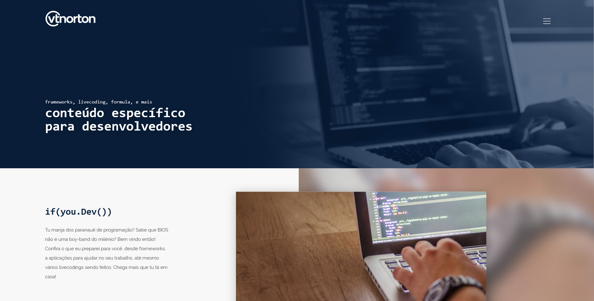

heartthrob: overview
The heartthrob framework can add more elegancy to your project, to looks like the Microsoft Fluent Design design, it was also inspired by Michael West - an incredible designer who will dominate the world with his ideas.
Built, since 2016, from scrath with bare CSS - and JavaScript, it uses the grid system for responsive websites based in Bootstrap 3, the idea is to have a start for when you need to develop a solution for your company or for yourself, it's clean, simple, easy and still small.
The ideia behind this project is to make it as simple as possible for new developers, and agencys that creates several websites a month, by making it simple to study, contribute and modify. It also does a lot of automatic functions without you needing to spend too much time in it.
perfect for dashboards
I built and use heartthrob in several dashboards and CMSs in several startups and corporate systems.
More to share about this soon.
bootstrap grid system
One of the key points of heartthrob is using the same bootstrap grid, with a tool that you have more control.
It also has a lot of compatibility with any website using bootstrap since we used a lot of similiar classes names.
kendo ui compatibility
Inside heartthrob you will find a kendo.heartthrob css file, that can add all the work made in this framework to the kendo interface. This looks pretty good for grids, dropdowns, scheduler and other inputs.
how to download it
Ok, enough talk about the project, how do you use it? First download it to your project using one of this options:
Download with npmDownload in GitHub Releases
We use continous delivery to make the latest version available to all of the options above, this is one of the reasons for not having direct download links here, since we build almost one version a week. I'm working on bringing other options for you to use it.
how to install it
To install the basics you will need to import the css file and the JavaScript file. Some - a lot - functions need jQuery to work, but if you are interested only on the css you should be fine without importing it too.
<link rel="stylesheet" href="./heartthrob/css/heartthrob.css" />
<script src="https://code.jquery.com/jquery-1.12.1.js"></script>
<script src="https://code.jquery.com/ui/1.12.1/jquery-ui.js"></script>
<script src="./heartthrob/js/heartthrob.js"></script>
If you don't want to use the minified version, than use this:
<link rel="stylesheet" href="./heartthrob/css/heartthrob.min.css" />
<script src="https://code.jquery.com/jquery-1.12.1.js"></script>
<script src="https://code.jquery.com/ui/1.12.1/jquery-ui.js"></script>
<script src="./heartthrob/js/heartthrob.min.js"></script>
If you want to use the kendo compatibility function, and make your kendo ui incredible beautiful then you will need to import this other file:
<link rel="stylesheet" href="./heartthrob/css/kendo.heartthrob.css" />
If you don't want to use the minified version, than use this:
<link rel="stylesheet" href="./heartthrob/css/kendo.heartthrob.min.css" />
Another part of the heartthrob is what we call uap (stands for user account program, it sucks I know, legacy code here, but its pretty useful), if you want to import this, just add it after the heartthrob css script.
<link rel="stylesheet" href="./heartthrob/css/uap.heartthrob.css" />
If you don't want to use the minified version, than use this:
<link rel="stylesheet" href="./heartthrob/css/uap.heartthrob.min.css" />
contribute: let's build it together
I [the author] and my team are using it in the solutions we build every single day, so expect nice fixes and small additions as it will be more and more compatible with Kendo and other browsers.
I'm more than open to have contributions to this project, so go to the GitHub page to help me make it even better!
heartthrob
heartthrob-docs
We use continous deployment/delivery to share the latest bits to you, so we ship fixes and new features as PATCH versions 1.1.XX, if we change anything that will require you to update your code than we will update the MINOR version with a blog post on what it had changed.
how to contribute
Here is a quicky guide in how to contribute to the framework:
-
Clone the project from GitHub.
git clone https://github.com/vtnorton/Heartthrob.git
- Use
npm installto install all dependencies - Use any editor you want to make any changes inside
/src - Once is finished and you want to build what you created, just run the command:
gulp build, and a folder/buildwill apper, use that folder to implement across your system.
And now here is a quicky guide in how to contribute to the documentation:
-
Clone the project from GitHub.
git clone https://github.com/vtnorton/Heartthrob-docs
- Use
npm installto install all dependencies - Use
gulp restoreto restore dependencies such as font-awesome and heartthrob itself to the folder/lib - Use any editor you want to make any changes inside
/src
don't code? Still want to contribute!?
Here is a few things you can do - almost in every open source project - that would help it be even better:
- Found something cool on the internet that you want to be added here? Tell me!
- Found a bug, please report! Will fix it ASAP - this is actually the code my team uses every single day.
- This documentation can be improved somehow? Just say it to me and will do my best!
- Something is missing, in the documentation, the repository, or in your life? You will be heard!
- Follow me on @vt_norton and in my blog to have info about updates!
project roadmap
I'm sharing with some some of my plans to move foward with heartthrob as I'm focused on:
- Accessibility: I want to make it more accessible for every person in the world and make it easy for developers to create accessible websites.
- Kendo UI compatibility: A lot of work to make a full compatibility with kendo is needed - including for different browsers. Also I'm focused on simplifing the kendo.heartthrob.css file.
I welcome contributions of all kinds from the community, but especially those that support the efforts above.
projects using hearrthrob

project status + more
heartthrob status
heartthrob-docs status
npm-version
Buy me a beer